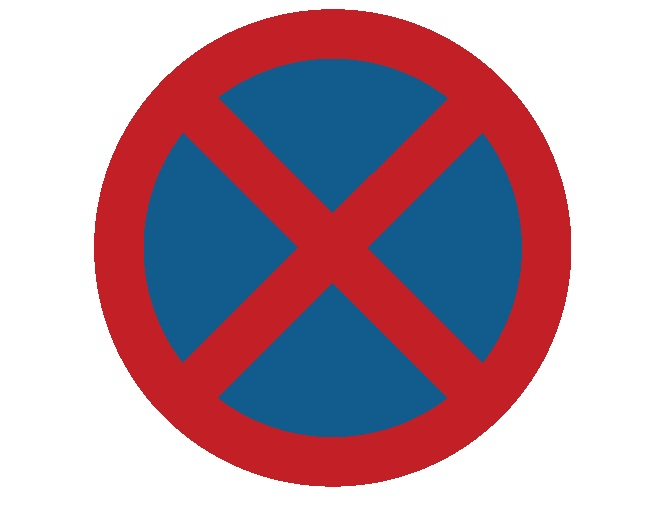

Sources : Legilux, Arrêté GD 23/11/1955
📌
Arrêt vs Stationnement — La différence fondamentale
Définitions
ARRÊT
Immobilisation temporaire pour laisser monter/descendre un passager ou charger/décharger rapidement. Le conducteur reste à proximité immédiate.
STATIONNEMENT
Immobilisation plus longue. Le conducteur peut quitter le véhicule.
PIÈGE SNCA : Une interdiction d'arrêt interdit aussi le stationnement. Mais une interdiction de stationnement peut autoriser l'arrêt court (ex: pour faire descendre quelqu'un).
🚫
Interdictions absolues d'arrêt + stationnement
Toujours interditPhotos de signaux d'interdiction en situation

Arrêt + stationnement interdits
Panneau C,6 ou ligne jaune continue — interdiction totale même quelques secondes.

Interdiction d'arrêt en situation
Le panneau interdit tout arrêt, même momentané, dans cette zone.

Zone de stationnement autorisé
Panneau E,23 — stationnement autorisé dans cette zone (souvent avec conditions).
Sur passage piétons ou à moins de 5 m avant
Sur piste cyclable
Sur bande d'arrêt d'urgence (hors urgence)
Sur passage à niveau
En deuxième file
Sur ligne jaune continue au bord du trottoir
Dans les virages sans visibilité / au sommet des côtes
Sur les ponts et dans les tunnels (sauf emplacements)
Devant les entrées/sorties de véhicules
📏
Distances minimales à respecter
5 m et 15 m5 m
Avant un passage piétons (dans le sens de la marche)
5 m
Avant un carrefour / intersection
15 m
De part et d'autre d'un arrêt de bus
PIÈGE SNCA : L'arrêt de bus = 15 mètres de chaque côté du panneau — pas 12 m. C'est une distance fréquemment piégée à l'examen.
〰️
Lignes au sol — Signalisation de bord de trottoir
Marquage jauneLigne jaune CONTINUE
Interdiction absolue d'arrêt ET de stationnement.
Ligne jaune DISCONTINUE
Stationnement interdit. Arrêt court autorisé.
Ligne ZIGZAG jaune
Interdiction d'arrêt — zones sensibles (écoles, hôpitaux).
Photos de lignes au sol en situation réelle

Ligne jaune discontinue
N'interdit pas l'arrêt — uniquement le stationnement prolongé.

Stationnement alterné — 1er au 15
Interdit ce côté du 1er au 15 du mois. Changer de côté à minuit.
PIÈGE SNCA : Ligne jaune continue = arrêt interdit. Ligne jaune discontinue = arrêt autorisé, stationnement interdit. Ne pas confondre les deux !
🏘️
Zones spéciales & Stationnement alterné
Disque & Alterné
Zone résidentielle
Stationnement autorisé uniquement sur emplacements signalés.
Zone piétonne
Généralement interdit (sauf autorisation spéciale livraison).
Trottoir
Interdit sauf si panneau avec pictogramme autorise explicitement (position des roues indiquée).
Stationnement alterné — Règle de la quinzaine
| Panneau | Signification |
|---|---|
| 1–15 | Interdit ce côté du 1er au 15 du mois |
| 16–31 | Interdit ce côté du 16 à la fin du mois |
→ Changer de côté à minuit le dernier jour de la période autorisée.
Disque de stationnement (zone bleue)
Afficher l'heure d'arrivée arrondie à la demi-heure suivante
Placer visiblement derrière le pare-brise
Respecter la durée maximale indiquée sur le panneau additionnel
💶
Sanctions — Amendes principales
Catalogue infractions12 €
Dépassement disque/parcmètre ≤ 30 min
24 €
Stationnement interdit / alterné / placement incorrect
49 €
Arrêt+stat. interdits / passage piéton / zigzag
145 €
Place handicapé sans droit / stationnement dangereux
📋
Mémo — À retenir absolument
5 m avant passage piéton (dans le sens de marche)
15 m de part et d'autre d'un arrêt de bus
Ligne jaune continue = interdiction absolue d'arrêt
Ligne zigzag = interdiction d'arrêt (écoles, hôpitaux)
2ème file = toujours interdit
Zone résidentielle = emplacements signalés uniquement
Disque = arrondir à la demi-heure suivante
Stationnement alterné = changer à minuit